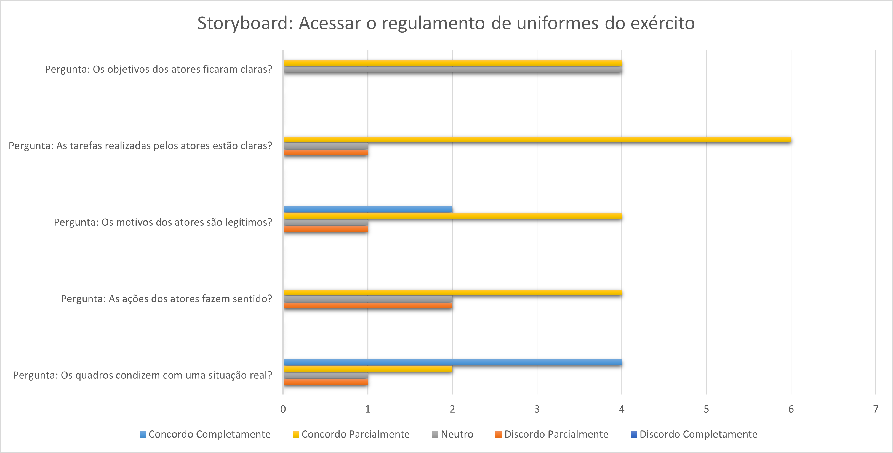
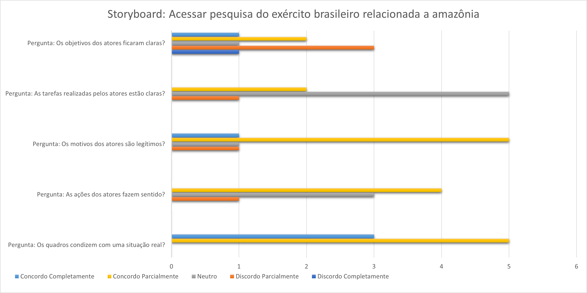

Relato dos Resultados da Avaliação dos StoryBoards
Em relação aos seguintes objetivos,
- Os quadros condizem com uma situação real?
- As ações dos atores fazem sentido?
- Os motivos dos atores são legítimos?
- As tarefas realizadas pelos atores estão claras?
- Os objetivos dos atores ficaram claras?
Ao qual foram respondidos através de um formulário on-line feito na plataforma Google Forms.
Teste Piloto
Foi realizado um teste piloto para ver se as funcionalidades do formulário estavam funcionandos de forma satisfatória, o que foi confirmado e apresentado no vídeo a seguir.

Foi analisado um total de 8 respostas e os dados foram apresentados em forma de gráfico, segue o vídeo de como foram extraídos os dados e os gráficos:
Obs.: Na hora de gravar o vídeo, ainda tinham apenas 5 respostas.

-
Storyboard: Acessar o regulamento de uniformes do exército 
Gráfico 1 - Acessar o regulamento de uniformes do exército -
Storyboard: Acessar pesquisa do exército brasileiro relacionada a Amazônia 
Gráfico 2 - Acessar pesquisa do exército brasileiro relacionada a Amazônia
Referências bibliográficas
BARBOSA, Simone; SILVA, INTERAÇÃO HUMANO-COMPUTADOR. Local de publicação: Elsevier Editora Ltda, 2010.
VIANNA, Maurício et al., Design Thinking. Local de publicação: MJV Press, 2011.
Storyboards, Paper Prototypes and Mockups - Scott Klemmer / Univ. Califórnia em Berkeley (Coursera), 2020. 1 vídeo (5:53 min). Disponível em: Link. Acesso em: 15 março 2022.
Versionamento
| Versão | Data | Descrição | Autor | Revisor |
|---|---|---|---|---|
| 0.1 | 30/03/2022 | Alterando Relato da avaliação dos Storyboards para outro arquivo .md | Levi Queiroz | |
| 0.2 | 31/03/2022 | Alterando caminho do video e trabalhando com o tamanho da imagem | Levi Queiroz |